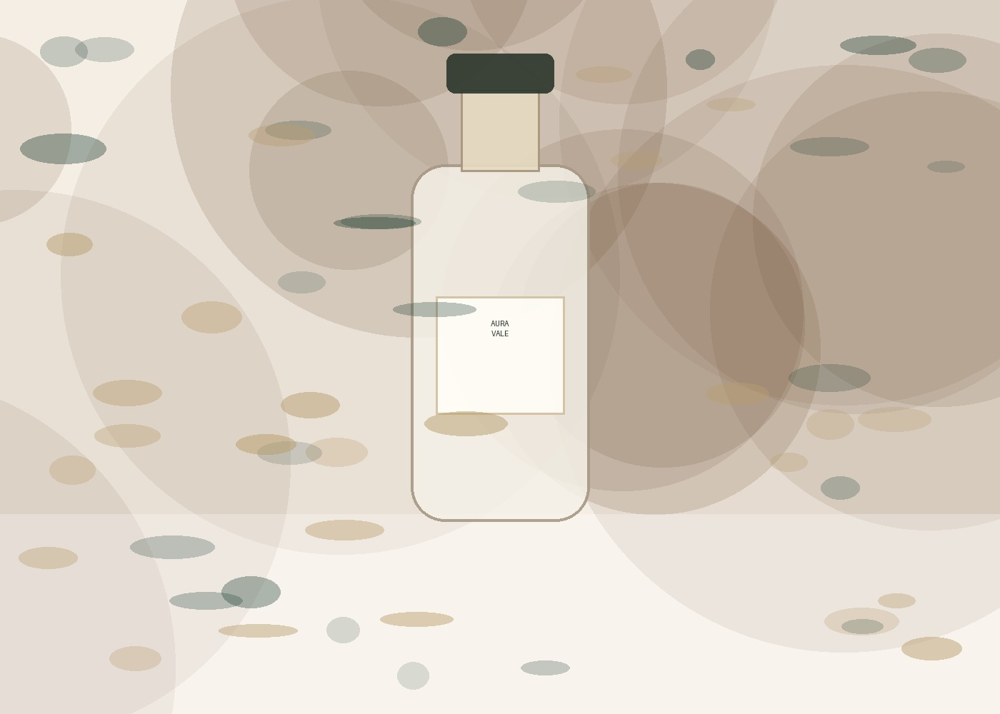
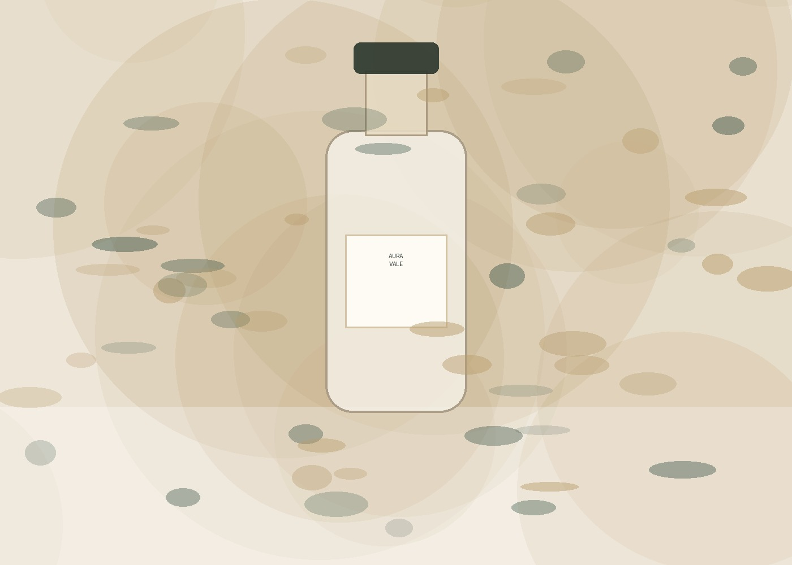
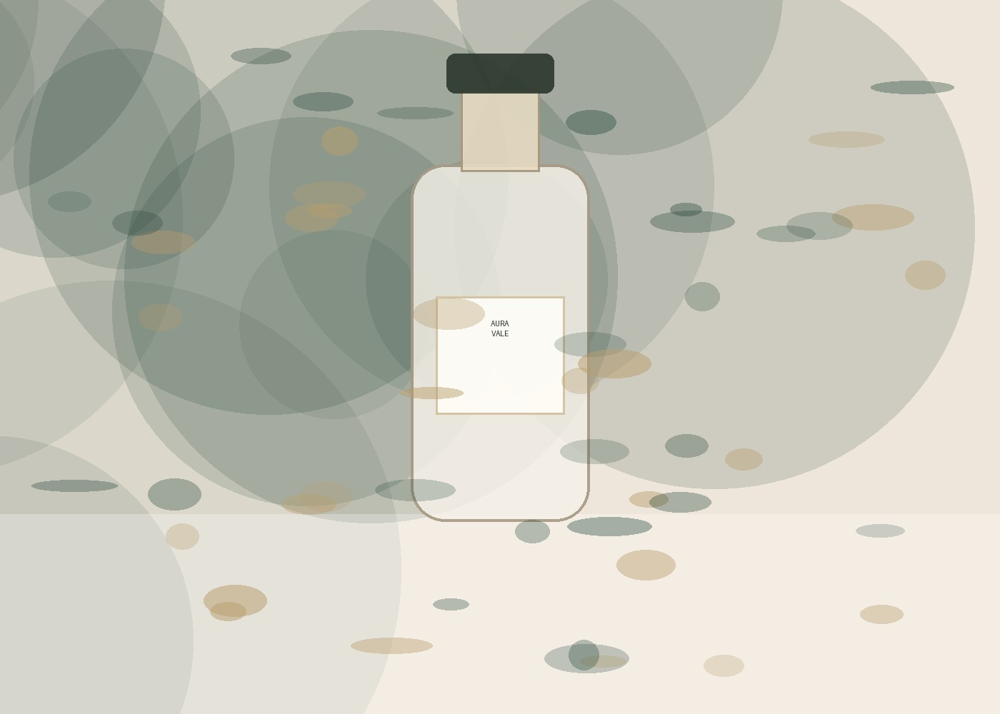
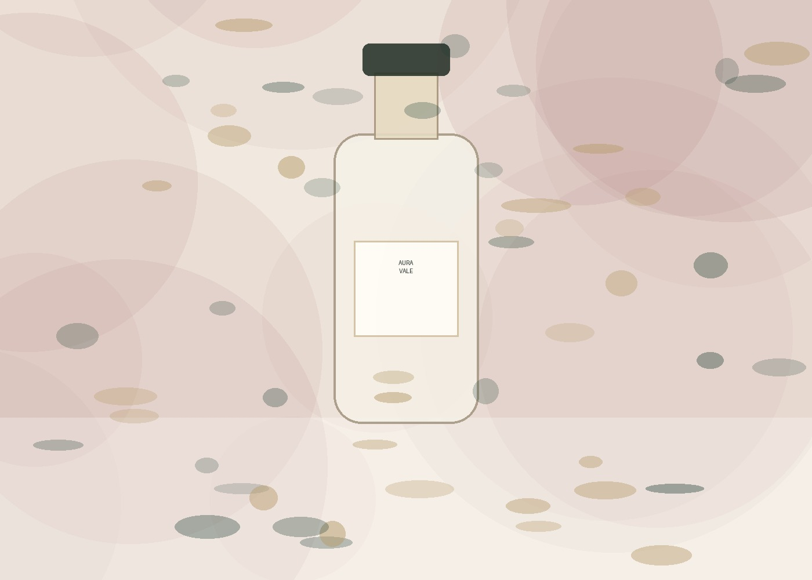
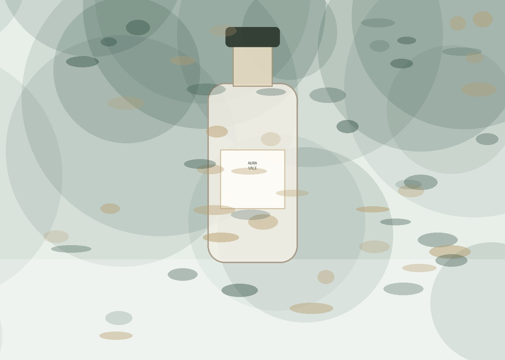
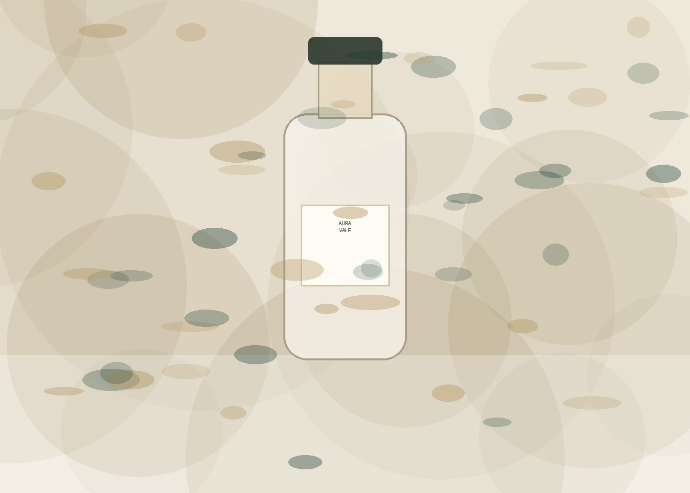

Artisanal Botanical Perfumery
Invisible gardens distilled into glass
AURA VALE is a slow perfume house creating modern botanical elixirs from dawn rose, night jasmine, aged oud and golden woods.

04 Signature botanical perfumes available now.
Rose Absolute· Aged Oud· Night Jasmine· Cedarwood· Amber· Bergamot· Sandalwood

Our Craft
Slow scent, deep memory
Every bottle is blended in small batches, rested before filling, and packed like a keepsake. The result is a refined store experience for a premium fragrance brand.
Dawn Harvest
Rose petals are selected early for brighter, cleaner floral expression.
Night Bloom
Jasmine notes are built around soft, moonlit white florals.
Aged Woods
Oud, cedar and sandalwood create a long-lasting trail.
The Reserve
Featured fragrances
A clean product layout ready for platform product injection or static preview.


